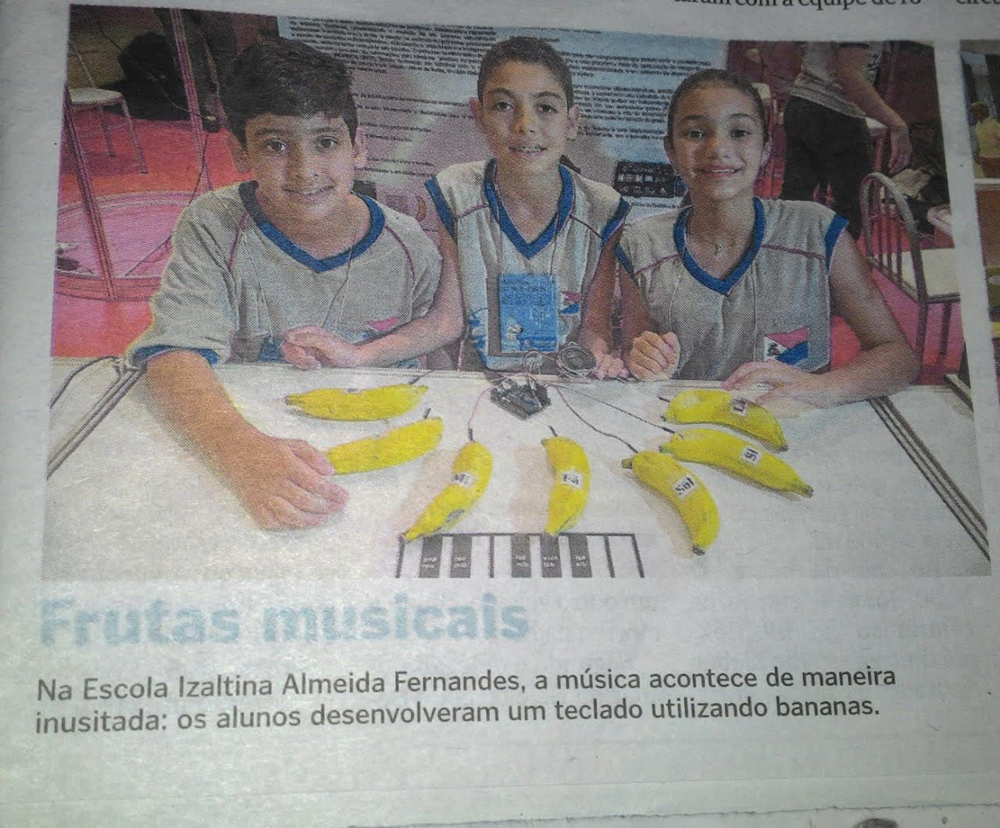

Meu nome é João Ricardo Milanezi, tenho 19 anos. Nasci em Vila Velha, ES.
Sou bolsista de Sistemas de Informação na UVV e entusiasta da tecnologia.
No tempo livre, toco saxofone, jogo simuladores e curto com amigos.
Sou vascaíno por causa do meu pai, mas não sou de praticar muito, eu gosto mais de correr e nadar.
essa é a minha música favorita (november rain):
um dos meus videos favoritos:
Estudei no Pedro Herkenhoff, Izaltina, Paulo Mares Guia e Maria Ortiz. Fiz técnico em metalurgia no IFES.
Atualmente na UVV, curso:
Meu interesse surgiu nas minhas aulas de robótica no ensino fundamental I, onde eu aprendi alguns conceitos de arduino. E, por isso, meu objetivo é no futuro, por meio de projetos, transformar a programação acessivel a todos para terem a mesma experiência que eu tive quando criança.
